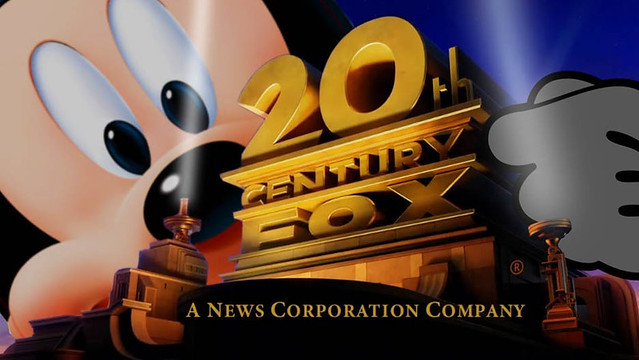

DISNEY WILL NOT REST UNTIL IT OWNES EVERYTHING THAT HAS EVER EXISTED
Once simply known as the "House of Mouse" that produced some of the most beloved and iconic animated motion pictures, of all time, Disney, realizing it had more money than roughly anyone else on Earth (or probably the universe for that matter), began to understand a simple and obvious - get everything popular under the same umbrella and watch the $$$ roll in...or as Warren Buffet would probably say - YOU HAVE TO SPEND MONEY TO MAKE MONEY.

It started with a landmark deal when Disney annouced they had purchased Star Wars from George Lucas for whopping 4 BILLION DOLLARS.

But Disney wasn't done...then they went after Marvel. The House of Mouse® now owns The House of Ideas©.

So now Disney was trucking along quite nicely. Marvel's movies were making nothing if not HUUUUGGGGEEEEE sums of money. But they realized Marvel's cinematic universe was missing core characters - the X-Men, the Fantastic Four and Deadpool to name a few. Disney knew that not only did there need to be a full unified Mavel Cinematic Universe, but they knew fans too wanted to see those iconic characters along side the Iron Man, Thor, Hulk, et cetera. But there was one little snag...Fox owned the rights to those chacters Disney wanted...and Fox and Disney have had a history for not playing nice with each other. So Disney reverted to an age old solution: see a problem. Throw money at it...lots and lots of money actually. Over $70 billion to be precise. Not chump change... And here I thought $4 billion for Star Wars was kind of crazy.
But where will it end??? At this point, the House of Mouse is little more than the overlord of entertainment via Star Trek's the Borg. Their mission - simple..their mission - the same: We are the Borg. Lower your shields and surrender your ships. We will add your biological and technological distinctiveness to our own. Your culture will adapt to service us. Resistance is futile.